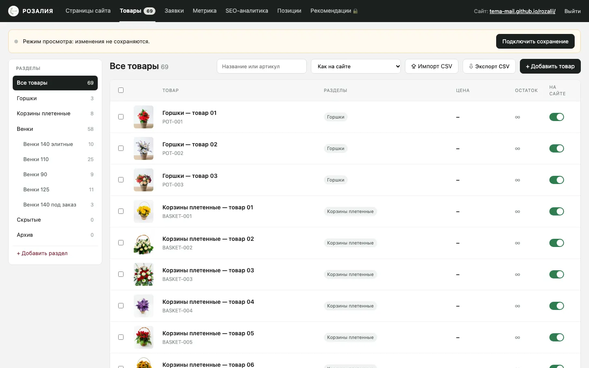
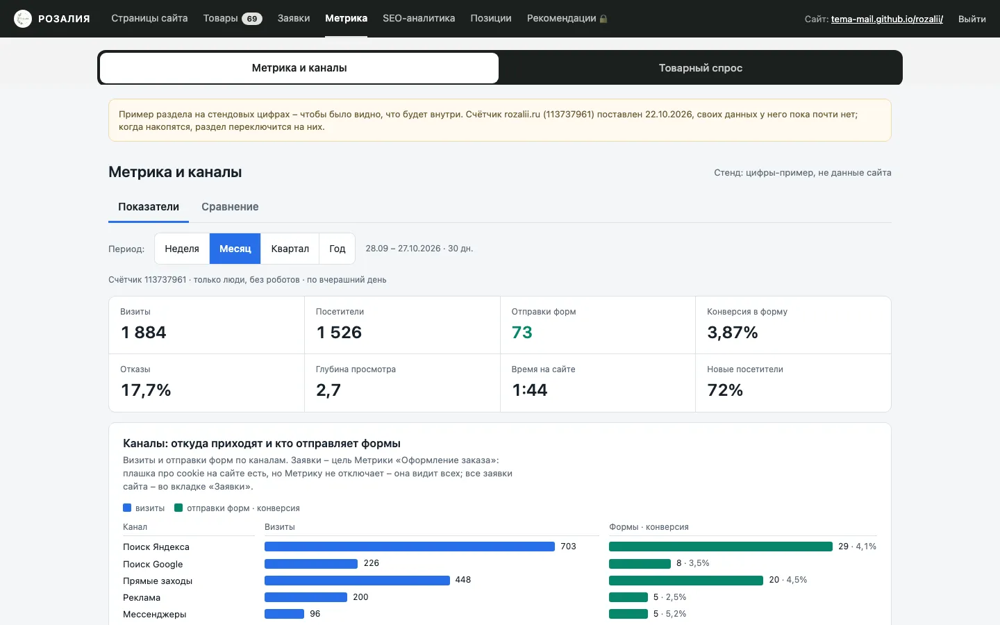
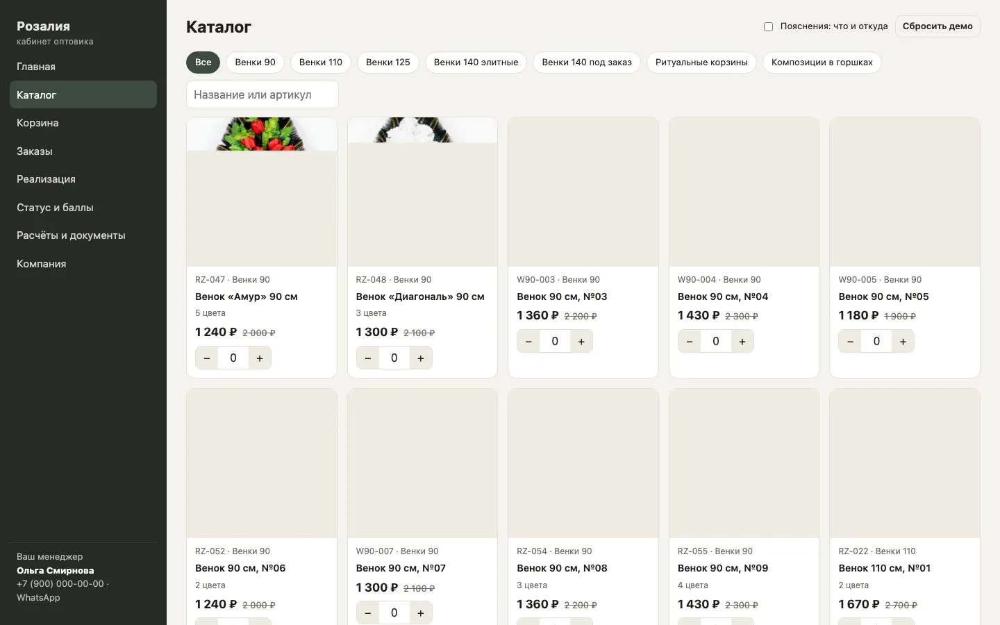
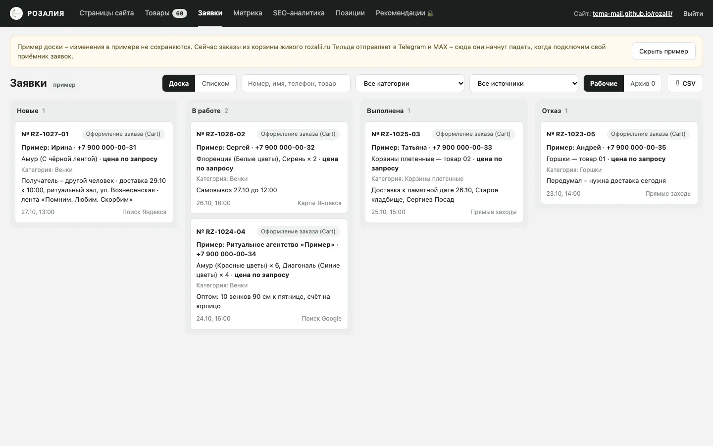
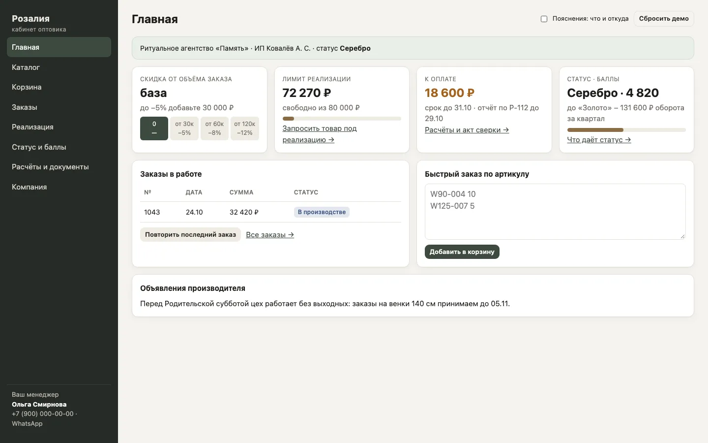
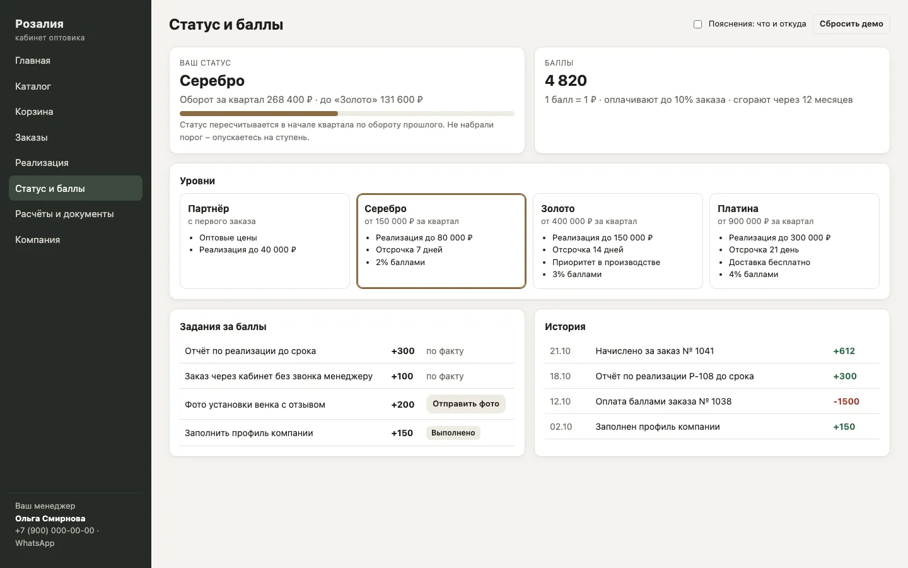

Сколько людей ищут венки и сколько из них станут вашими клиентами
Спрос в рознице по Москве и области и в опте по России, стратегия «два сайта – розница и опт» и прогноз заявок на 3, 6 и 12 месяцев.
Смотреть прогноз →Розница: ≈5 800 запросов в месяц, и почти все из Москвы и области
В самом Сергиевом Посаде ищут десятками в месяц, а в Москве и области – тысячами. Поэтому розницу продвигаем на Москву и область, а свой город и соседние берём отдельными страницами.
| Запрос | Москва и обл. | Сергиев Посад |
|---|---|---|
| ритуальные венки | 2 268 | 18 |
| траурный венок | 1 411 | 0 |
| венок на кладбище | 920 | 22 |
| искусственные венки | 579 | 0 |
| ритуальная корзина | 371 | 2 |
| Итого по ядру | 5 549 | 42 |
| Город в запросе | В месяц |
|---|---|
| ритуальные венки москва | 490 в ядре |
| венки пушкино | 90 |
| венки мытищи | 76 |
| венки сергиев посад | 39 |
| венки дмитров | 39 |
| венки щёлково · ивантеевка · хотьково · краснозаводск | 56 |
| Итого городами | ≈300 |
Сезон: «ритуальные венки», Москва и область, 10.2025 – 09.2026
Источник: Яндекс Вордстат, снято 27.10.2026 за 08.09–07.10.2026 (свежее сервис не отдаёт). Частоты – широкое соответствие, вложенные фразы частично пересекаются, поэтому итог – верхняя граница рынка. Ровный спрос весь год с подъёмом летом; к Радонице – плюс 15–20 % к марту.
Опт: ≈1 300 запросов в месяц по России, и сезон начинается сейчас
Оптом ищут по всей стране, а не только в Подмосковье: из 1 272 запросов «венки оптом» на Москву и область приходится 143. Оптовики закупаются с ноября по март.
| Запрос, Россия | В месяц |
|---|---|
| венки оптом | 1 272 |
| в т.ч. ритуальные венки оптом | 453 |
| в т.ч. венки оптом от производителя | 138 |
| венки от производителя | 160 |
| искусственные цветы оптом ритуальные | 48 |
| ёрш, фоны, каркасы для венков оптом | 66 если делаете |
| брендовые запросы чужих оптовиков (София, Феникс, Анемона) | −250 |
| Доступно нам | ≈1 300 |
Сезон: «венки оптом», Россия, 10.2025 – 09.2026
Зелёным – оптовый сезон ноябрь–март. Провал в июне, второй подъём в августе.
Сайты оптовиков слабые
У nika-ritual, venki-optom, ritualopt и других нет страниц по регионам, контент – новости и акции.
Кабинет оптовика
Есть только у четырёх из девяти разобранных оптовиков. У вас демо уже собрано.
Производитель стоит и в рознице
Оптовики с каталогом и ценами попадают в топ и по «ритуальные венки». Опт тянет розницу.
Конкуренты берут поиск количеством страниц
Разобрали 11 розничных и 9 оптовых сайтов. Топ по рознице одинаковый в Сергиевом Посаде, Дмитрове и Москве: venkov.ru, venkionline24.ru, horonim-venki.ru, купить-венок.рф, венки24.рф.
венки24.рф
Страницы под районы Москвы, станции метро, кладбища и 36 городов области, в том числе Сергиев Посад.
купить-венок.рф
Районы, округа, кладбища, города области. На каждой странице – свои кладбища с адресами.
мфц-ритуал.рф
Страницы кладбищ и поддомены городов. Каталог копируется с подменой названия города.
На Тильде так не сделать: у фильтров каталога нет своих адресов, а сотни страниц собираются вручную. На коде мы поднимаем 200–500 страниц и разбираем, какие запросы конкуренты не забрали. Каждая страница – под свой спрос и со своими фактами (сроки, доставка, кладбища, фото), без подмены названия города: за шаблонные страницы новый домен получит фильтр на весь сайт.
Делим сайт на два: розница на основном домене, опт – на своём
У покупателя венка и у ритуального агентства разные вопросы, цены и путь к заказу. Два сайта не мешают друг другу в поиске, и каждый развивается своей структурой.
Розница · B2C · Москва и область
- Магазин с ценами «от», настоящими названиями и корзиной
- Страницы размеров 90 / 110 / 125 / 140 с ценой в заголовке
- «Траурный венок», «венок на кладбище», «ритуальные корзины»
- Сергиев Посад, Москва, Пушкино, Мытищи; остальные города – таблицей доставки
- Кладбища округа – после проверки спроса
- Статьи: как выбрать венок, что написать на ленте
Опт · B2B · вся Россия
- «От производителя»: минимальный заказ, цены по размерам, сроки
- Прайс таблицей на странице, чтобы его видел поиск, и PDF
- Доставка по России: свой транспорт по области и транспортные компании
- Страницы регионов, куда вы реально отгружаете
- Кабинет оптовика: статусы, баллы, реализация, документы
- Цех, объёмы, договор, кейсы с агентствами – только подтверждённое
SEO на коде
Основной источник заявок. Новые коммерческие страницы и статьи каждый месяц.
Яндекс Бизнес
Быстрый старт, пока SEO набирает силу. Работает как Директ, только дешевле. Настраиваем на розницу.
Ссылки и площадки
Карты, 2ГИС, Zoon, каталоги производителей. Без этого Яндексу и нейросетям нечем подтвердить, что вы есть.
Сколько мы заберём при этой стратегии
Считаем от спроса выше: какую долю поисковых переходов возьмёт сайт к каждому сроку и сколько из них станут заявками. Переключите сценарий.
| Канал | через 3 мес. | через 6 мес. | через 12 мес. |
|---|
Розница: 5 800 запросов × доля переходов 1 % → 4 % → 10 % × 3 % в заказ или звонок. Опт: 1 300 × 2 % → 7 % → 15 % × 6 % в запрос прайса. Опту отдаём бóльшую долю: у оптовиков слабые сайты и нет страниц по регионам.
Ориентир – наш кабинет в другой нише: 1 934 показа за 340 ₽, переход 7 ₽, целевое действие 68 ₽. В ритуальной нише клик дороже, поэтому закладываем 10–20 ₽ за переход и 100–200 ₽ за действие. Точную цену покажут первые две недели.
Домену два месяца. С октября у Яндекса сбои обхода в дата-центрах, новые страницы индексируются медленнее. Гарантий позиций нет, первые изменения в Вебмастере – через 2–6 недель после внесения.
Один оптовик – это повторные закупки весь сезон, поэтому 10 оптовых заявок в месяц стоят больше, чем 10 розничных заказов. Выручку посчитаем, когда будут ваши цены и средний чек.
Админка сайта и кабинет оптовика уже собраны
Сайт на коде грузится быстрее Тильды, у каждой страницы свой адрес, а внутри – всё для управления продажами.






Демо кабинета: tema-mail.github.io/rozalii/opt. Уровни, скидки и лимиты на экранах – пример, настроим по вашим условиям.
Что сколько стоит
Перенос сайта с Тильды на код
Сайт делали мы, поэтому перенос, админку и кабинет оптовика не берём в счёт. Дальше сайт уходит на обслуживание.
Обслуживание и SEO
Наполнение сайта, новые коммерческие страницы (размеры, города, Москва, кладбища, регионы опта) и статьи каждый месяц. Розница и опт.
Яндекс Бизнес
Карточка на Картах, прайс, отзывы и реклама в Поиске и на Картах. Подписка от 5 000 ₽ в месяц при оплате за 3 месяца; промокод на первую кампанию удваивает бюджет – показов хватает на полгода. Через полгода смотрим результат и продлеваем.
Ссылки и площадки
Находим, где должны быть производители венков, анализируем доноров, размещаем: Яндекс Бизнес, 2ГИС, Zoon, каталоги производителей. Бесплатные и платные площадки – по согласованию.
Яндекс Директ или реклама ВК · по желанию
Если нужны заявки сразу, а не через SEO. Ведёт Денис Коротаев, Target Factory.
Начинаем с опта: его сезон уже идёт
- Перенос на код
- Цены «от» и названия товаров
- Вебмастер, Метрика, цели
- Запуск Яндекс Бизнеса
- opt.rozalii.ru: прайс, условия, доставка по России
- Кабинет оптовика по вашим условиям
- Размеры, Москва, Пушкино, Мытищи
- Площадки и ссылки
- Первые статьи
- Первый замер позиций
- Новые страницы и статьи каждый месяц
- Регионы опта
- Подготовка к Радонице
- Через полгода – итог Яндекс Бизнеса
Что нужно от вас
- Розничные цены, хотя бы «от» по размерам
- Названия 53 товаров, у которых сейчас заглушки
- Куда возите в розницу: Москва? Пушкино, Мытищи?
- Фактический адрес для Яндекс Бизнеса
Для опта
- Минимальный заказ и скидки от объёма
- Оплата для юрлиц и отсрочка
- Куда уже отгружаете по России
- Делаете ли комплектующие: ёрш, фоны, каркасы

Артём Галимов
Сайты и интернет-магазины на коде, SEO и продвижение. Ответим на вопросы по предложению и покажем кабинет оптовика живьём.
Deford is a partner of Target Factory · Предложение подготовлено 02.11.2026